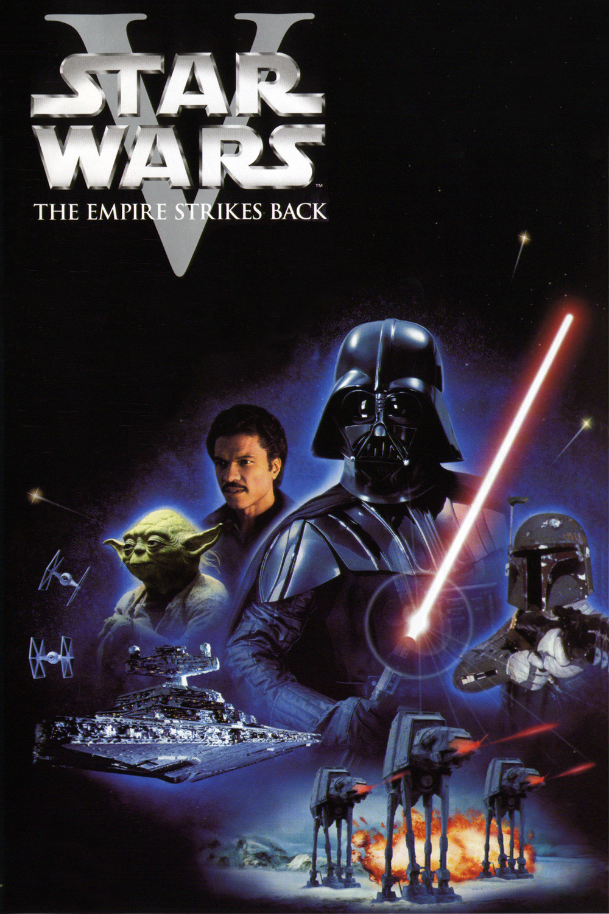
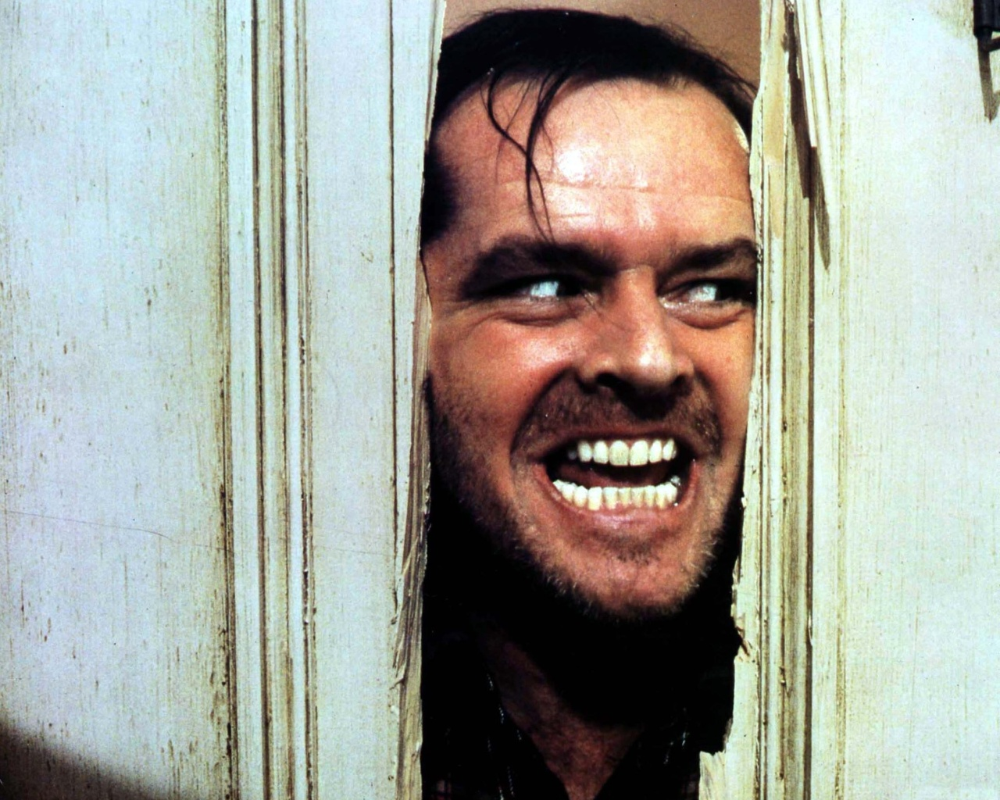
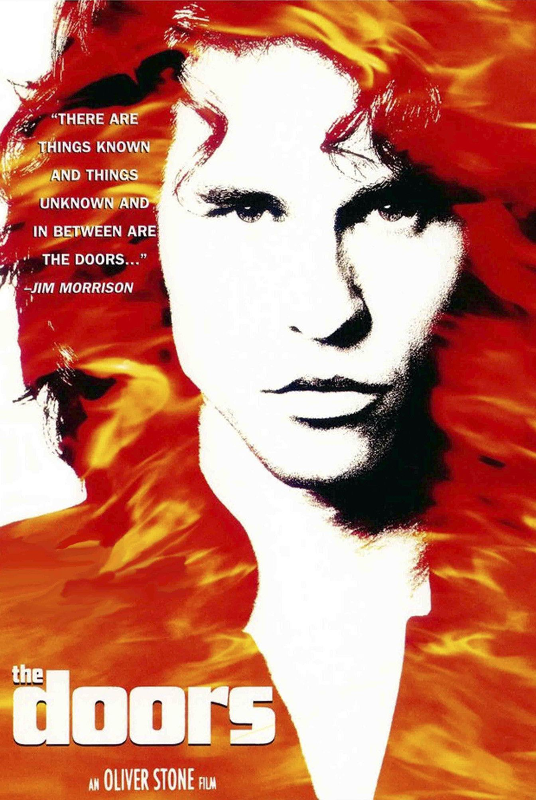

Human apprentice, Eternal optimist. Perpetual explorer looking for vibrations. Sport,Travel & Art enthusiast.
Wanna see ?|  |
Star Wars : The Empire Strikes Back - George LucasThe Empire Strikes Back is a 1980 American epic space opera film directed by Irvin Kershner. Leigh Brackett and Lawrence Kasdan wrote the screenplay, with George Lucas writing the film's story and serving as executive producer. |
|  |
The Shining - Stanley KubrickA family heads to an isolated hotel for the winter where an evil spiritual presence influences the father into violence, while his psychic son sees horrific forebodings from both past and future. |
|  |
The Doors - Oliver StoneThe story of the famous and influential 1960s rock band The Doors and its lead singer and composer, Jim Morrison, from his days as a UCLA film student in Los Angeles, to his untimely death in Paris, France at age 27 in 1971. |